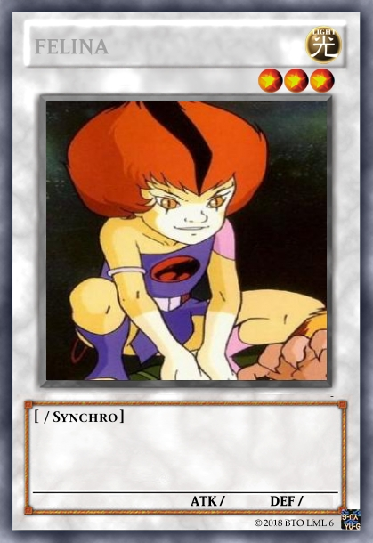

Serie de TV (1985-1989). 130 episodios. Los ThunderCats (Felinos Cósmicos) son personajes mitad humanos y mitad felinos. Ellos huyen de su natal Thundera porque el planeta estaba a punto de estallar, en su nave espacial se colocan en una especie de cápsulas donde no envejecerían el único que no entró en ellas fue Jaga el líder. Malignos seres atacan la nave dañándola severamente. Antes de morir Jaga logra llevar a la nave al Tercer Planeta en donde los felinos estarían a salvo...
